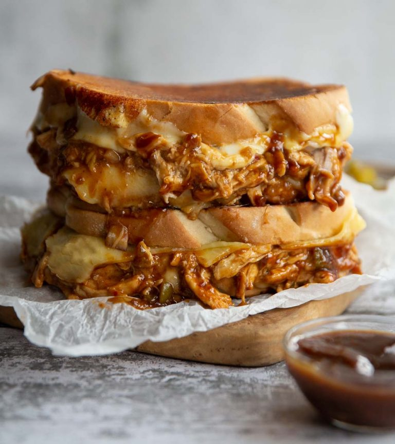

BBQ Chicken Grilled Cheese

Description
As grilled cheese recipes go, this is definitely one of the more simple
ones. It requires few ingredients and it’s perfect to customize! Great
when you’re starving for lunch and the cheese craving hits.
Ingredients
-
4 large or 8 small thick slices of Sourdough, Tiger or Giraffe Bread
(UK)
- 2 packed cups / 250g-300g Cooked Chicken, shredded (see notes)
- 2/3 cup / 160g BBQ Sauce, or to preference
- 4 square slices of Monterey/Pepper Jack Cheese
- 4 square slices of Cheddar (or second cheese of choice)
- 1/4 - 1/3 cup finely diced Red Onion
-
1/4 cup Pickled Jalapeños, finely diced (or to spice preference)
- Butter, as needed
Steps
-
In a medium sized mixing bowl combine chicken, BBQ sauce, jalapeños
and red onion. Place to one side.
-
In a large pan with the heat OFF add two slices of bread. Butter one
side, then flip so they're butter-side-down. Top with two slices of
Monterey Jack, half your chicken, followed by two slices of cheddar.
Add another slice of bread, butter the tops then turn on heat to a
medium.
-
Fry both sides until nice and golden with the cheese melting through
the centre. If you're making two giant ones be careful when you flip
or the filling with spill out. Slice in half and enjoy!